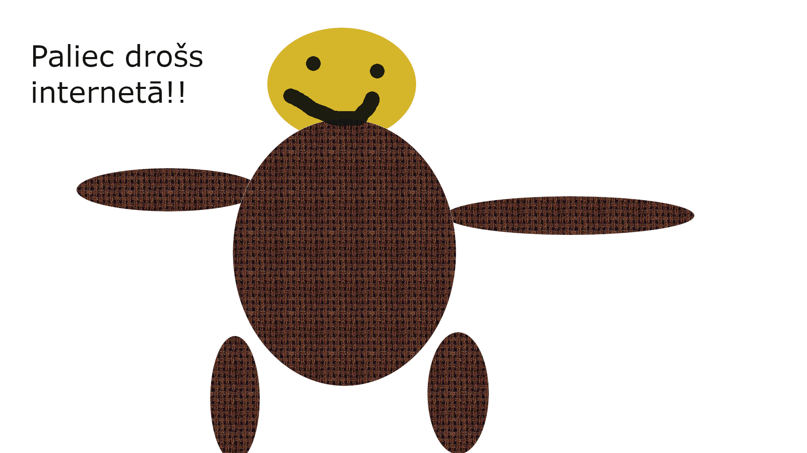
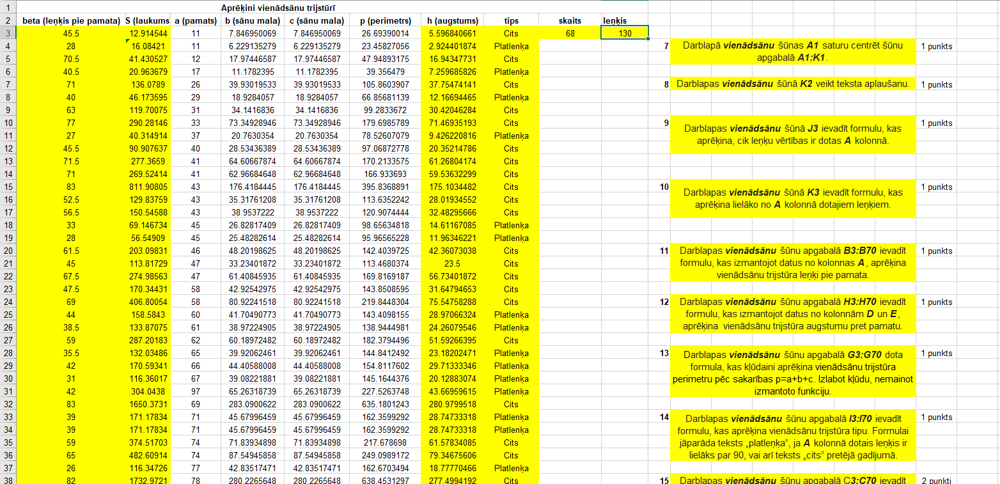
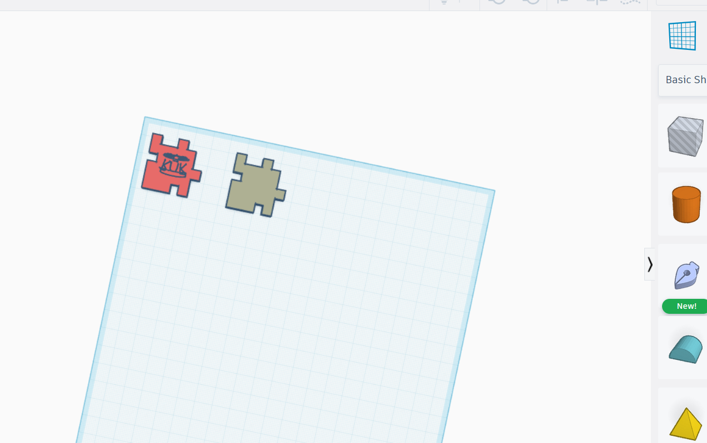
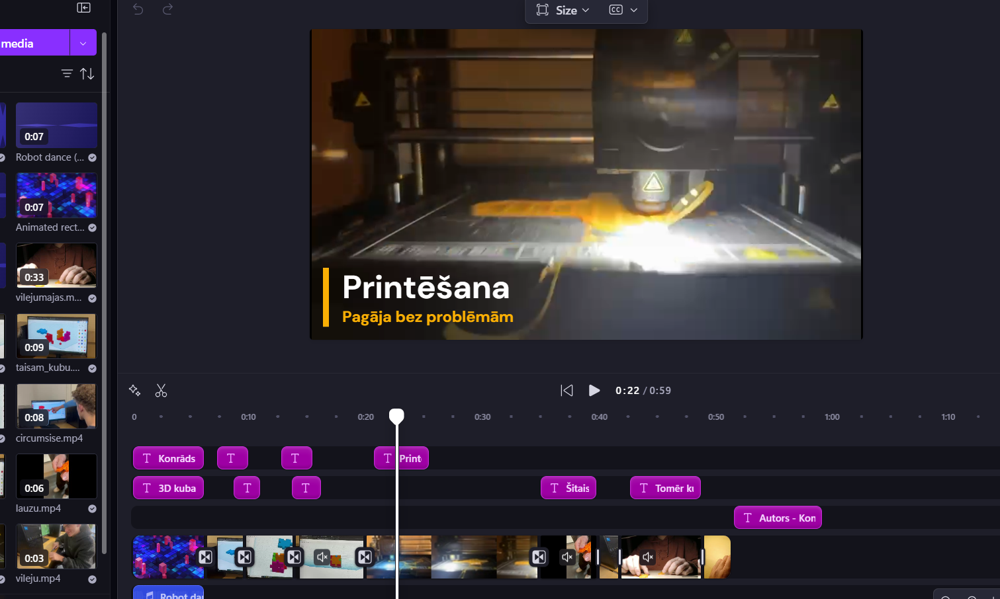
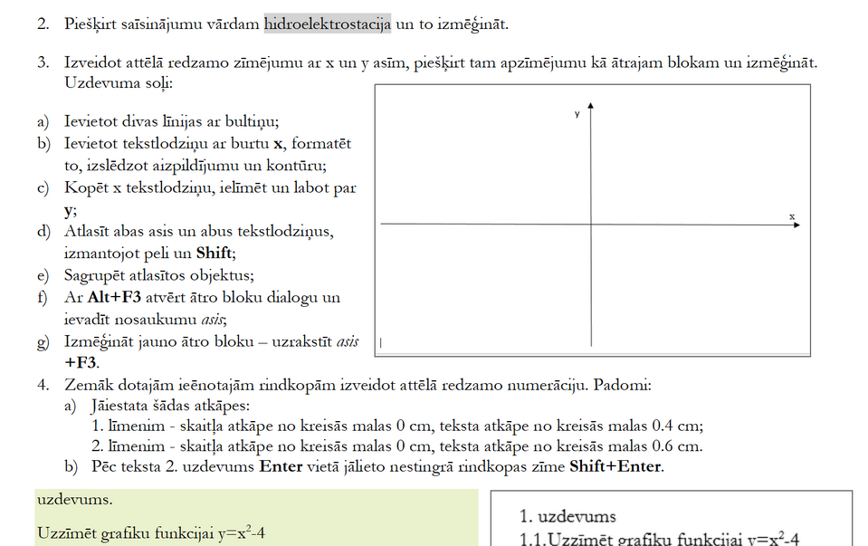

ATTĒLU APSTRĀDE
Mācību procesā, lietojot GIMP programmu, mēs iepazināmies ar attēlu rediģēšanas pamatiem un radošām iespējām. Apguvām, kā atvērt un saglabāt dažādu formātu attēlus, kā arī izmantojām svarīgākos rīkus – atlases rīkus, otu, dzēšgumiju un aizpildījumu. Mācījāmies strādāt ar slāņiem, izpratām to nozīmi un praktiski izmantojām caurspīdīgumu un slāņu kārtošanu, lai veidotu daudzslāņu kompozīcijas. Tāpat apguvām, kā pielietot dažādus filtrus, efektus un gradientus, kā arī mainīt attēla izmērus un veikt krāsu korekcijas. Veidojām tekstus un iepazināmies ar teksta slāņu īpašībām. Noslēgumā izveidojām paši savus attēlu projektus, kur pielietojām visus iepriekš apgūtos rīkus un metodes — gan fotorediģēšanu, gan grafiskā dizaina elementu veidošanu.
Mēs apguvām rastra grafiku(gif attēli
Kā ari vektorgrafiku
Excel
Datorikas stundās mēs mācījāmies strādāt ar Microsoft Excel. Apguvām, kā izveidot tabulas un ievadīt tajās datus. Mācījāmies veidot dažādas formulas, piemēram, saskaitīšanu, atņemšanu, reizināšanu un dalīšanu, kā arī izmantot funkcijas, piemēram, SUM, AVERAGE, MIN un MAX, lai ātri aprēķinātu rezultātus. Tāpat iepazinām, kā sakārtot datus pēc noteiktiem kritērijiem un kā izmantot filtrus, lai atlasītu tikai vajadzīgo informāciju. Mācījāmies arī formatēt šūnas — mainīt to krāsu, fonta izmēru un pievienot rāmīšus, lai tabulas būtu pārskatāmākas. Vēl apguvām, kā izveidot diagrammas, lai datus varētu attēlot vizuāli. Tas palīdzēja labāk saprast un salīdzināt informāciju. Kopumā Excel mums iemācīja, kā efektīvāk apstrādāt datus un izmantot tos dažādos uzdevumos.
3D modelēšana
Mēs mācījāmies 3D modelēšanu, izmantojot Tinkercad aplikāciju. Šī lietotne ir lieliski piemērota iesācējiem, jo tā ir vienkārša un intuitīva. Tinkercad ļauj izveidot dažādus 3D modeļus, izmantojot pamata ģeometriskas formas, un piedāvā plašas iespējas, lai pielāgotu un veidotu sarežģītākus objektus. Mēs apguvām, kā izmantot šīs funkcijas, lai izveidotu savus modeļus, kas var tikt izmantoti 3D drukāšanā vai kā daļa no citiem projektēšanas procesiem. Tinkercad palīdzēja mums attīstīt izpratni par telpiskām attiecībām un dizaina principiem, kā arī veicināja radošumu un problēmu risināšanas prasmes.
Video apstrāde
Mēs mācījāmies video rediģēšanu, izmantojot aplikāciju Clipchamp. Šī lietotne piedāvā vienkāršu un lietotājam draudzīgu saskarni, kas ļauj viegli apstrādāt video materiālus. Mēs apguvām, kā pievienot efektus, pārejas, tekstus un skaņas, kā arī kā sagriezt un apvienot klipus, lai izveidotu profesionāli izskatīgus video. Clipchamp palīdzēja attīstīt mūsu video rediģēšanas prasmes, veicinot radošumu un tehniskās zināšanas multimediju projektos.
Inkscape
Programmā Inkscape es apguvu, kā veidot un rediģēt vektorgrafikas zīmējumus. Iemācījos strādāt ar līnijām, formām un krāsām, kā arī veidot objektus un tos kombinēt. Uzzināju, kā lietot slāņus, pārveidot attēlus un pievienot tekstu. Tagad protu izveidot vienkāršus dizainus, logotipus un ilustrācijas.
Word
MS Word es apguvu dažādas noderīgas prasmes. Es iemācījos veidot un formatēt tekstu, lietot virsrakstus, sarakstus un tabulas. Uzzināju, kā ievietot attēlus un diagrammas, kā arī izmantot dažādus fontus un krāsas. Apguvu arī dokumenta noformēšanu, lapas iestatījumus un drukas sagatavošanu. Tagad protu sagatavot skaistus un kārtīgus dokumentus.